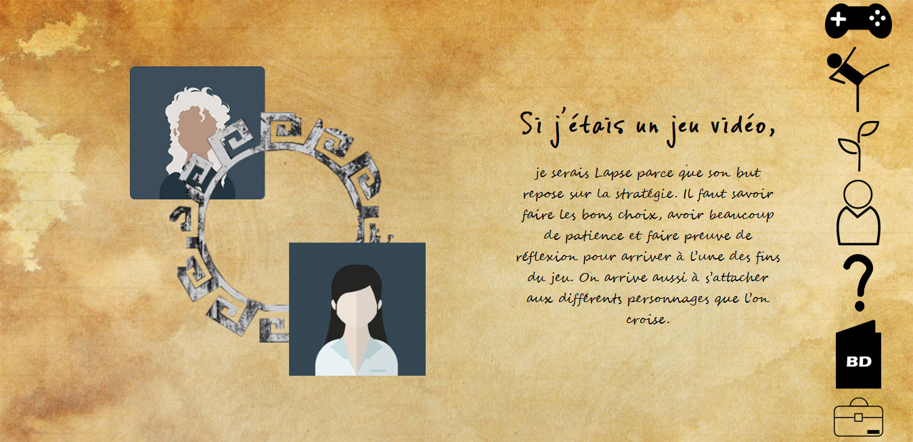
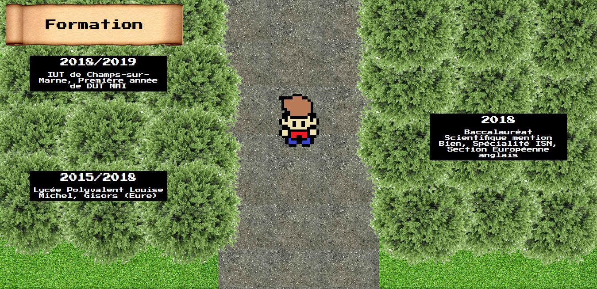
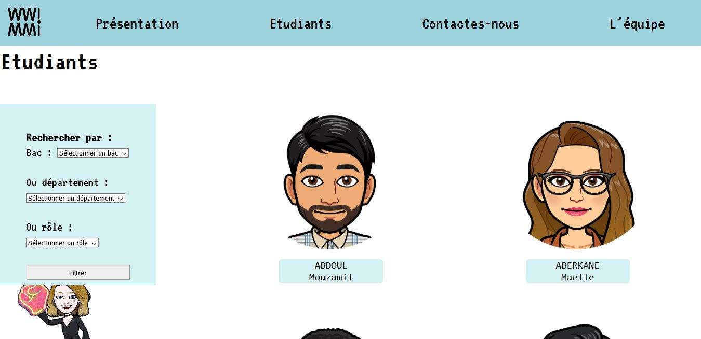
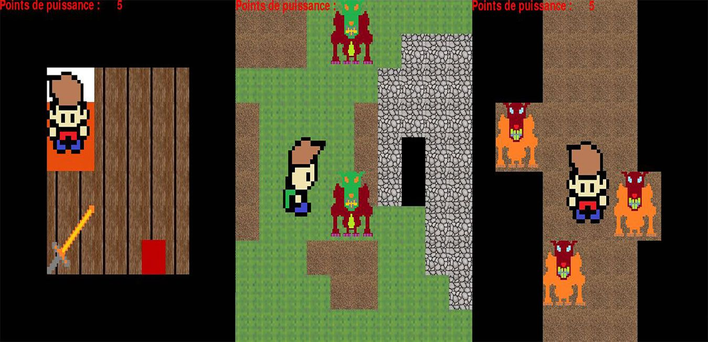

Inventaire
✖Portrait Chinois
Type : Site web - Portrait
Rareté : Commune
Description : Un portrait chinois, cela vous dit quelque chose ? Son but est d'associer sa personnalité à un thème (plante, film, couleur…) et le tout présenté sous la formule : “Si j'étais…, je serais…” .
Dans ce projet, associant pour la première fois développement et design, venez découvrir ma personnalité aux travers des 7 thèmes choisis de ce portrait chinois.
Propriétés :
- Interface one-page avec menu intégré
- Animations déclanchées au défilement
- Non responsive
Composants : Photoshop (Maquette), Illustrator, HTML, CSS, JS
Obtention : Quête académique - Projet de 1ère année de DUT MMI, intégration web
Accès au site ✖Curriculum Vitae Quest
Type : Site web - CV interactif
Rareté : Commune
Description : Réalisé pour l'une des parties du projet tutoré de 1ère année de DUT MMI, Curriculum Vitae Quest transforme un simple CV en aventure interactive. Inspiré par le jeu développé en Terminale (Brock's Quest), incarnez le personnage principal évoluant alors à travers les différentes sections du CV vous permettant de découvrir le parcours que j'avais à l'époque.
Propriétés :
- Déplacements avec touches directionnelles
- Animations au scroll
- Non responsive
Composants : Photoshop (Maquette/Cartes), HTML, CSS, JS
Obtention : Quête académique - Projet de 1ère année de DUT MMI, projet tutoré partie I
Accès au site ✖WWI
Type : Site web - Plateforme de présentation
Rareté : Peu commune
Description : Réalisé en équipe de trois, WWI est la deuxième partie du projet tutoré de 1ère année de DUT MMI. Le but ? Présenter et promouvoir la formation MMI ainsi que ses étudiants aux lycéens. Ils peuvent alors découvrir les profils des étudiants et poser des questions.
En tant que développeuse full-stack, j'ai pu m'occuper d'une partie de l'intégration front-end, de la conception complète du script PHP et des requêtes SQL pour les fiches étudiantes et les filtres.
Propriétés :
- Sélection des étudiants affichés par des filtres (Bac, Régions, Rôles dans projet)
- Possibilité de laisser des questions via un formulaire
Composants : HTML, CSS, PHP, SQL, Photoshop (Maquette)
Obtention : Quête académique - Projet de 1ère année de DUT MMI, projet tutoré partie II
Accès au site ✖Brock's Quest
Type : Jeu vidéo - RPG
Rareté : Rare
Description : Créer pour le projet du troisième trimestre de Terminale, Brock's Quest est une jeu d'aventure où vous incarnez Brock (oui très original comme nom) et dont le but est d'explorer les différents maps du jeu. Ce jeu était ma première expérience en développement de jeu vidéo et j'y ai assuré le rôle de développeuse.
Propriétés :
- Déplacement entre plusieurs cartes
- Pas de système de combat
Composants : Python, Pygame, Geany
Obtention : Quête académique - Projet de Terminale spé ISN
Voir la démonstration ✖